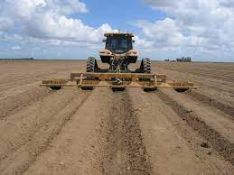

بہت سے اشنکٹبندیی اور ذیلی اشنکٹبندیی ممالک میں گنا ایک اہم نقدی فصل ہے جو دنیا کی چینی کی پیداوار کا 2/3 سے زیادہ حصہ بناتی ہے۔ پاکستان میں گنا ایک اہم اور اعلیٰ قیمت والی نقد آور فصل ہے۔ یہ بنیادی طور پر چینی اور چینی سے متعلقہ پیداوار کے لیے اگائی جاتی ہے۔ یہ ملک کی کسان برادری کے لیے آمدنی اور روزگار کا ایک اہم ذریعہ ہے۔ چینی کی صنعت ہمارے ملک کی قومی معیشت میں کلیدی کردار ادا کرتی ہے۔ گنے چینی فراہم کرتا ہے، اس کے علاوہ حیاتیاتی ایندھن، فائبر، نامیاتی کھاد، چپ بورڈ، کاغذ اور ماحولیاتی پائیداری کے ساتھ بہت سے دیگر ضمنی مصنوعات/ شریک مصنوعات۔ زراعت اور مجموعی گھریلو پیداوار کی ویلیو ایڈڈ میں اس کا حصہ بالترتیب 3.7 فیصد اور 0.8 فیصد ہے۔ 2010-11 کے سیزن کے دوران 1.241 ملین ہیکٹر رقبہ پر گنے کی کاشت کی گئی جو پچھلے سال کے مقابلے میں 20.6 فیصد زیادہ ہے۔ سال 2011-12 کے لیے گنے کی پیداوار کا تخمینہ 58.0 ملین ٹن ہے جب کہ گزشتہ سال کی پیداوار 55.3 ملین ٹن تھی۔ یہ پچھلے سال کی پیداوار کے مقابلے میں 16.8 فیصد کی نمایاں بہتری کی نشاندہی کرتا ہے۔
گنے ایک گہری جڑوں والی فصل ہے اور زمین کی مناسب تیاری گنے کے جڑ کے نظام کی نشوونما اور فصل کی بہترین نشوونما میں اہم کردار ادا کرتی ہے۔ زمین کو کم از کم ہر دو سال بعد گہرا ہل چلا کر تیار کرنا چاہیے۔ مٹی کو ڈسک کیا جانا چاہئے. یہ بہت ضروری ہے کہ زمین کی تیاری سے ایک ماہ قبل کم از کم 8 سے 10 کارٹ اچھی طرح سے بوسیدہ فارم یارڈ کھاد (FYM) ڈالیں۔ چینی کی صنعت سے پریس مٹی نامیاتی مادے اور غذائی اجزاء کا ایک اور بہترین ذریعہ ہے۔ سبز کھاد بھی اس مقصد کو پورا کر سکتی ہے۔ تیار کھیت میں مٹی نرم اور اچھی طرح سے کام کرنے والی ہونی چاہئے تاکہ مکمل انکرن ہو اور بعد میں پودے بغیر کسی رکاوٹ کے بڑھیں (کومپیکٹ ذیلی مٹی کی تہہ)۔
گنے کی کاشت ستمبر یا فروری سے مارچ میں کرنی چاہیے۔ ستمبر میں لگائی گئی فصل عام طور پر 25 سے 35 فیصد زیادہ پیداوار دیتی ہے۔
گنے کو قطار میں 100 سینٹی میٹر کے فاصلے پر لگانا چاہیے۔ 2 سے 3 سینٹی میٹر مٹی کی تہہ سے ڈھکی ہوئی کھالوں میں تھری بڈڈ ڈبل سیٹس کو سرے سے آخر تک رکھنا چاہیے۔
ایک ایکڑ میں پودے لگانے کے لیے تقریباً 80 سے 100 من پتلی گنے کی اقسام اور 100 سے 120 من موٹی اقسام کافی ہیں۔
گنے کی بہتر اقسام کا صحت مند بیج استعمال کریں۔ اس سے گنے کی پیداوار میں 20 سے 25 فیصد تک اضافہ ہو سکتا ہے۔ گنے کی آبپاشی کی ضروریات کا خیال رکھنا بہت ضروری ہے، خاص طور پر گرمیوں کے مہینوں میں۔ کسانوں کو اپنے کھیتوں میں دستیاب پانی کے مطابق گنے کی فصل کے نیچے کاشت کرنے کے لیے اپنے رقبے کی منصوبہ بندی کرنی چاہیے۔ یاد رکھیں کہ موسم گرما میں بارش کے مطابق آبپاشی کے شیڈول کو ایڈجسٹ کرتے ہوئے فصل کے سال کے دوران ہر کھیت کو کم از کم 16 سے 20 آبپاشی ملنی چاہیے۔
گنے کی آبپاشی کی ضروریات کا خیال رکھنا بہت ضروری ہے، خاص طور پر گرمیوں کے مہینوں میں۔ کسانوں کو اپنے کھیتوں میں دستیاب پانی کے مطابق گنے کی فصل کے نیچے کاشت کرنے کے لیے اپنے رقبے کی منصوبہ بندی کرنی چاہیے۔ یاد رکھیں کہ موسم گرما میں بارش کے مطابق آبپاشی کے شیڈول کو ایڈجسٹ کرتے ہوئے فصل کے سال کے دوران ہر کھیت کو کم از کم 16 سے 20 آبپاشی ملنی چاہیے۔
آبپاشی کے شیڈول کا جدول:
مارچ-اپریل 12تا 14 دن
مئی تا جون 8 تا 10 دن
جولائی-اگست 10-15 دن (اگر بارش نہ ہو تو، آبپاشی کا وقفہ 8-8 دن ہونا چاہئے)
ستمبر-اکتوبر 15-20 دن
نومبر-دسمبر 25-30دن

پاکستان میں کھاد کا استعمال غیر متوازن، ناکافی اور نامناسب ہے۔ ملک میں گنے کے زیادہ تر کاشتکار صرف نائٹروجن والی کھاد استعمال کرتے ہیں جبکہ دیگر N اور P کا غیر متوازن امتزاج استعمال کرتے ہیں۔ گنے کی فصل میں پوٹاش کا استعمال تقریباً نظر انداز کر دیا جاتا ہے۔ گنے کی فصل کی زیادہ سے زیادہ پیداواری صلاحیت سے فائدہ اٹھانے کے لیے متوازن کھادوں کی مناسب مقدار استعمال کرنا بہت ضروری ہے۔ تمام فاسفورس اور پوٹاش اور ایک چوتھائی (نائٹروجن)N کاشت کے وقت لگائیں۔ یہ بہتر ہے کہ (فاسفورس)P اور (پوٹاشیم)K کو ان کھالوں میں لگایا جائے جہاں بیج کے سیٹ لگائے جائیں۔ بقیہ نائٹروجن والی کھاد تین مساوی حصوں میں ڈالی جا سکتی ہے یعنی اپریل، مئی اور وسط جون سے فروری مارچ تک کاشت کی گئی فصل

کیڑے مکوڑے گنے کی پیداوار کو کم کرنے میں اہم کردار ادا کرتے ہیں۔ سب سے زیادہ سنگین کیڑے گنے کے بورر، پائریلا اور سفید مکھی ہیں۔ بعض علاقوں میں میلی بگ، بلیک بگ اور آرمی ورم بھی نقصان پہنچا رہے ہیں۔
پاکستان میں کیڑوں کے حملے کی وجہ سے پیداوار میں ہونے والے نقصانات کے صحیح تخمینے نہیں ہیں لیکن یہ بتایا گیا ہے کہ ٹاپ بورر، اسٹیم بورر، گورداسپور بورر اور پیریلا بالترتیب 15-20، 10-20 اور 30-35 فیصد تک پیداوار میں کمی کا باعث بنتے ہیں۔ بعض صورتوں میں کیڑوں کے حملے کی وجہ سے فصل کی پیداوار میں 80-85 فیصد تک کمی کی اطلاع ملی ہے۔
کگنے میں ہونے والے ان نقصانات کو سال بھر سائنسی طور پر ڈیزائن کردہ آئی پی ایم پروگرام کے ذریعے گنے کی فصل کو کیڑے مکوڑوں سے مناسب تحفظ کے ذریعے ہی کم کیا جا سکتا ہے۔ کیڑے مار ادویات کو ثقافتی طریقوں، مزاحم اقسام اور قدرتی دشمنوں کے تعارف اور تحفظ کے ساتھ مل کر اور ضرورت پڑنے پر استعمال کیا جاتا ہے۔ کیڑے مار ادویات IPM پروگرام میں ایک اہم کردار ادا کرتی رہیں گی۔ تاہم، بنیادی فرق یہ ہے کہ ان مصنوعات کا استعمال انتخابی اور معقول طریقے سے کیا جائے گا۔
کھیتی باڑی کی کھاد ہمیشہ اس وقت استعمال کی جائے جب یہ مکمل طور پر بوسیدہ ہو۔ اس سے دیمک کا حملہ کم ہو جائے گا۔ کھیت میں ردی کی ٹوکری کو زیادہ دیر تک نہیں رکھنا چاہیے اور اسے جلایا جا سکتا ہے۔ خشک ٹہنیاں جو بوروں سے حملہ کرتی ہیں ان کو نکال کر جلا دینا چاہیے۔ فصل کو ہمیشہ جتنا ممکن ہو زمین کے قریب کاٹیں۔ روشنی کے جالوں کا استعمال ان کے بالغوں کو مارنے والے بوررز کے پھیلاؤ کو کنٹرول کرنے میں مدد کرے گا۔ مئی-جون کے دوران ارتھ اپ کرنے سے گورداسپور بورر کو کنٹرول کرنے میں مدد ملے گی کیونکہ بالغ افراد مٹی کی چوٹیوں سے باہر نہیں آ سکیں گے۔ کسی بھی کیڑے کے شدید حملہ کی صورت میں فصل کو رتن کے طور پر نہ رکھیں
کیڑے مار ادویات/کیڑے مار ادویات کے استعمال کے علاوہ، کیڑوں کو حیاتیاتی اقدامات سے بھی کنٹرول کیا جا سکتا ہے۔ یہ کنٹرول اقدامات ماحولیات کے لیے محفوظ اور خطرے سے پاک ہیں۔ Cotesia flavips گنے کے بوروں کا ایک اہم لاروا طفیلی ہے۔ اس کی مادہ بورر لاروا کے اندر انڈے دیتی ہے اور انڈوں سے نکلنے کے بعد اس کا لاروا بورر لاروا کے اندر کھانا کھاتا ہے۔ بالغ پیراسائٹائڈ کھیت میں زیادہ بورر لاروا پر حملہ کرتے ہیں۔ Trichogramma chilonis گنے کی بوریوں کے انڈوں کو تباہ کر دیتی ہے۔ اس کی مادہ بوروں کے انڈوں کے اندر انڈے دیتی ہے۔ پیراسیٹائڈ لاروا میزبان انڈوں میں کھانا کھاتے ہیں، انہیں تباہ کر دیتے ہیں۔ Epi-pyropes گنے کے پائریلا کو تباہ کر دیتی ہے۔ یہ پرجیویوں کو لیبارٹری میں بڑے پیمانے پر ضرب دیا جاتا ہے اور پھر گنے کے کھیتوں میں چھوڑ دیا جاتا ہے
گنے کی بیماریوں پر قابو پانے کے لیے صحت مند بیج کا استعمال کریں جو بیماری سے پاک ہو اور ترجیحاً بیماری کے خلاف مزاحمت کرنے والی اقسام کاشت کریں۔ پودے لگانے سے پہلے بیج کو فنگسائڈ/s سے ٹریٹ کریں۔ کھیت سے بیمار پودوں کو ہٹا دیا جائے اور یا تو دفن کر دیا جائے یا جلا دیا جائے۔ بیج کو گرم پانی سے 520 سینٹی گریڈ پر 30 منٹ تک ٹریٹ کیا جا سکتا ہے۔
بیجوں کی پیداوار کے مراکز میں ہیٹ تھراپی کا رواج عام ہوتا جا رہا ہے تاکہ بیج کو ریٹون سٹنٹنگ بیماری، گھاس والی ٹہنیاں اور پتوں کے پیمانے سے نجات دلائی جا سکے۔ یہ علاج گنے کے سیٹوں کو 520 سینٹی گریڈ تک گرم پانی میں دو گھنٹے تک ڈبونے پر مشتمل ہے۔ گرم ہوا کے علاج یا نم گرم ہوا کے علاج میں، گنے کے پورے ڈنڈوں کو بالترتیب 540 سینٹی گریڈ پر آٹھ اور چار گھنٹے تک علاج کیا جاتا ہے۔ تاہم، سب سے زیادہ گرم ہوا کے علاج کو ترجیح دی جاتی ہے، کیونکہ گرم ہوا کا علاج کلیوں کو نقصان پہنچاتا ہے جو بالآخر انکرن کو کم کر دیتا ہے۔ نئی فصل کاشت کرتے وقت، گنے کی فصل کے بہترین پیچ کے نمونوں سے بیج استعمال کرنا ضروری ہے، بیماری اور کیڑوں سے پاک۔ بیماری سے پاک، اچھی کوالٹی کا بیج پیداوار میں 10-15% اضافہ کرتا ہے۔

فصل کی کٹائی سے 25 سے 30 دن پہلے آبپاشی بند کر دیں اور کٹی ہوئی فصل کو زیادہ دیر تک کھیت میں نہ چھوڑیں۔ اگر اسے لمبے عرصے تک رکھنا پڑے تو اسے کوڑے سے ڈھانپ دیا جائے۔ لگائی گئی مختلف اقسام کو ان کی پختگی کے مطابق کاٹا جا سکتا ہے۔ ابتدائی پکنے والی اقسام کی کٹائی نومبر کے دوران، وسط موسم کی اقسام دسمبر میں اور دیر سے پکنے والی اقسام کی جنوری میں شروع کی جا سکتی ہے۔ فروری-مارچ کے دوران کاشت کی گئی فصل اچھی ریٹون فصل دیتی ہے۔
کٹائی اس وقت کی جاتی ہے جب فصل پوری طرح پک جائے ۔ ابتدائی اقسام اور رتون فصلیں سب سے پہلے کاٹی جاتی ہیں۔ جب تنے کی سطح کے قریب ہوتا ہے تو، تنے کے زیادہ سے زیادہ حصے کو کاٹنے کے لیے بڑی چوکسی کی ضرورت ہوتی ہے، جو اس کے وزن اور چینی کی مقدار دونوں کے لیے قیمتی ہے۔ کٹے ہوئے گنے کو فوری طور پر چکی میں لے جانا چاہیے ورنہ وزن اور سوکروز کا نقصان ہو سکتا ہے۔ اس مقصد کے لیے ٹرانسپورٹ کا پہلے سے انتظام کیا جانا چاہیے۔.

جیسا کہ ہم نے مذکورہ بالا تمام حقائق سے دیکھا کہ گنے کی کم پیداوار کی بڑی وجہ زرعی طریقوں کا غلط استعمال ہے۔ اور ظاہری اعداد و شمار سے بھی ہم دیکھ سکتے ہیں کہ جیسا کہ ہم نے چینی کی فی ایکڑ پیداوار میں اضافہ کیا ہے ہمارے گنے کی پیداوار اور چینی کی وصولی میں کمی آئی ہے۔ اس کی وجہ گنے کی قسم کا غلط استعمال اور کاشت کا عمل ہے۔ لہٰذا اگر ہم گنے کی کوالٹی کو بڑھانا چاہتے ہیں تو ہمیں محکمہ زراعت کی طرف سے بتائے گئے طریقے کے مطابق مناسب طریقے سے گرنے کی ضرورت ہے۔